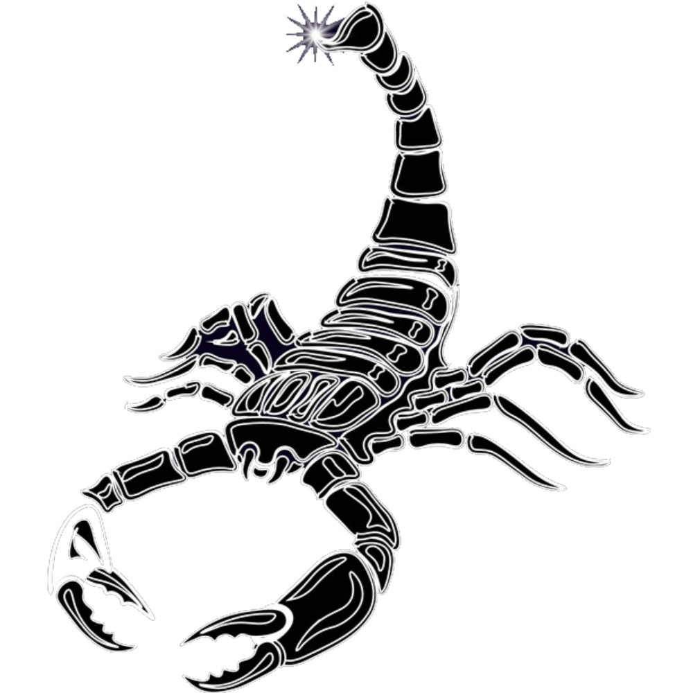

SCORPIO (October 22 - November 22)
Sun is in Scorpio, born with passion htat is intense and dangerous.

TOPAZ GOLD (November)
Topaz is a gemstone that has been revered by humankind for millennia. It is a mellow, empathic crystal that soothes, heals, and recharges. Topaz promotes forgiveness and truth. It cuts through doubt and uncertainty, giving you the power to follow your dreams
Chrysantemum Gold
Some chrysantemum fax that is reletable to you